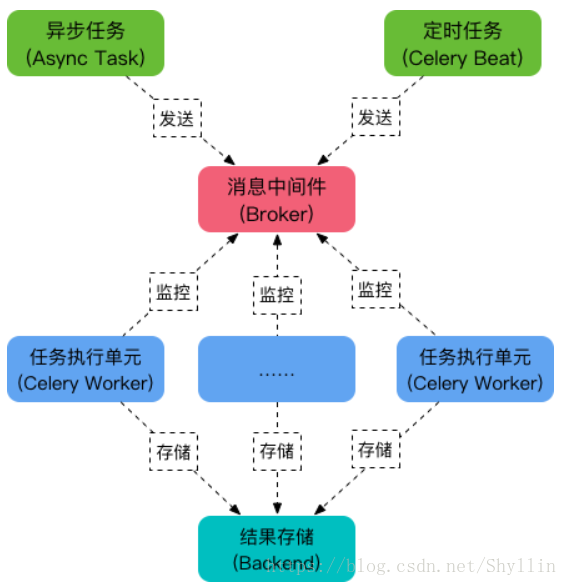

Celery
简介
Celery 是一个由 Python 编写的用来处理大量信息的分布式 队列管理工具 .
Celery 是一个专注于实时处理和任务调度的分布式任务队列, 同时提供操作和维护分布式系统所需的工具.
Celery 是一个分布式队列的管理工具, 可以用 Celery 提供的接口快速实现并管理一个分布式的任务队列.
Celery 本身不是任务队列, 是管理分布式任务队列的工具. 它封装了操作常见任务队列的各种操作, 我们使用它可以快速进行任务队列的使用与管理.
主要特性
1.方便查询任务的进展情况，如执行结果，状态，消耗时间。
2.可以利用功能齐全的后台管理进行任务的添加，删减等操作。
3.可以进行并发操作。
4.提供异常处理机制。
主要架构

可以看到，Celery 主要包含以下几个模块：
任务模块 Task
包含异步任务和定时任务。其中，异步任务通常在业务逻辑中被触发并发往任务队列，而定时任务由 Celery Beat 进程周期性地将任务发往任务队列。
消息中间件 Broker
Broker，即为任务调度队列，接收任务生产者发来的消息（即任务），将任务存入队列。Celery 本身不提供队列服务，官方推荐使用 RabbitMQ 和 Redis 等。
任务执行单元 Worker
Worker 是执行任务的处理单元，它实时监控消息队列，获取队列中调度的任务，并执行它。
任务结果存储 Backend
Backend 用于存储任务的执行结果，以供查询。同消息中间件一样，存储也可使用 RabbitMQ, redis 和 MongoDB 等。
消息代理
Celery 本身不是任务队列, 是管理分布式任务队列的工具. 它封装了操作常见任务队列的各种操作, 我们使用它可以快速进行任务队列的使用与管理.
RabbitMQ (消息队列)，Redis（缓存数据库），数据库（不推荐）
redis发布订阅模式用做消息队列和rabbitmq的区别：
可靠性
redis ：没有相应的机制保证消息的可靠消费，如果发布者发布一条消息，而没有对应的订阅者的话，这条消息将丢失，不会存在内存中； rabbitmq：具有消息消费确认机制，如果发布一条消息，还没有消费者消费该队列，那么这条消息将一直存放在队列中，直到有消费者消费了该条消息，以此可以保证消息的可靠消费，那么rabbitmq的消息是如何存储的呢？（后续更新）；
实时性
redis:实时性高，redis作为高效的缓存服务器，所有数据都存在内存中，所以它具有更高的实时性
消费者负载均衡：
rabbitmq队列可以被多个消费者同时监控消费，但是每一条消息只能被消费一次，由于rabbitmq的消费确认机制，因此它能够根据消费者的消费能力而调整它的负载； redis发布订阅模式，一个队列可以被多个消费者同时订阅，当有消息到达时，会将该消息依次发送给每个订阅者，她是一种消息的广播形式，redis本身不做消费者的负载均衡，因此消费效率存在瓶颈；
持久性
redis：redis的持久化是针对于整个redis缓存的内容，它有RDB和AOF两种持久化方式（redis持久化方式，后续更新），可以将整个redis实例持久化到磁盘，以此来做数据备份，防止异常情况下导致数据丢失。 rabbitmq：队列，每条消息都可以选择性持久化，持久化粒度更小，更灵活；
队列监控
rabbitmq实现了后台监控平台，可以在该平台上看到所有创建的队列的详细情况，良好的后台管理平台可以方面我们更好的使用； redis没有所谓的监控平台。
主要应用场景
web应用，当需要触发事件需要较长时间处理完成，可以交给celery进行异步执行，执行完后返回结果，这段时间不用等待，提高系统的吞吐量和响应时间。
异步任务：发送邮件、提示消息、文件上传、图像处理、清理/删除缓存、给客户发送生日祝福等等
项目应用
实验楼的秒杀模块使用到了Celery的定时任务，每天的凌晨0点跑一次，查看当天是否有秒杀场次，有则将秒杀页面用的信息从数据库取出，缓存到redis中。
# task.py
from celery import Celery
import time
# broker和backend都设置为redis
my_task = Celery('task',broker='redis://127.0.0.1:6379/1',
backend='redis://127.0.0.1:6379/2')
# 任务执行单元
@my_task.task
def func1(x,y):
time.sleep(10)
return x + y
# handle.py
from task import func1
res = func1.delay(2,4) # 用delay去向执行单元派送任务并传参
print(res.id)
运行worker
celery worker -A task -l INFO
# -A 指定worker所在的Celery app的文件名，就是task
# -l 是日志打印的级别
# -c 10 可以同时开启10个worker处理
# handle.py
python3 handle.py
使用问题
在Django中使用celery内存泄漏问题？
在django下使用celery作为异步任务系统，十分方便。
同时celery也提供定时任务机制，celery beat。使用celery beat 可以为我们提供 cron，schedule 形式的定时任务。
在django下使用celery beat的过程中，发现了 celery beat进程 占用内存非常大，而且一直不释放。
怀疑其有内存占用不释放的可能。
因为之前使用django的时候，就知道在django中开启DEBUG模式，会为每次的SQL查询 缓存结果。 celery beat 作为 定时任务的timer和heartbeat程序，是长期运行的，而我使用了MYSQL作为存储定时任务的backend。
因为每次heartbeat和timer产生的sql查询在开启了DEBUG模式下的django环境中，都会缓存查询结果集。因此 celery beat占用的 内存会一直不释放。在我的线上环境中 达到10G内存占用！
解决： 关掉django的DEBUG模式，在setting中，设置DEBUG=False 即可。 关闭DEBUG模式后的celery beat程序 的内存占用大概 一直维持在150M左右。